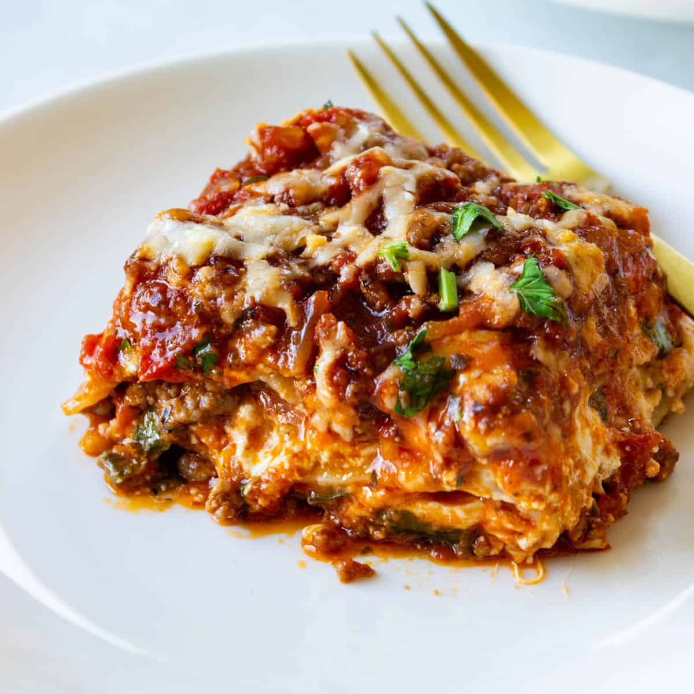

Lasagna is an italian dish.It is used for light lunch.The ingredients for making easy lasagna are:
This easy lasagna starts with ground beef.You can use ground turkey for a light option.
Spaghetti sauce:Use store-bought or homemade spaghetti sauce.
Seasonings:Season the easy lasagna with dried parsley,salt,and black pepper.
Lasagna noodles:Of course, you'll need lasagna noodles!
Water:Pour 1/2 cup of water around the edges of the baking dish before baking.
Gather all ingredients and preheat the oven to 350 degress F(175 degrees C).
Heat a large skillet over medium-high heat.Cook and stir ground beef in the hot skillet until browned and crumbly,8 to 10 minutes.
Drain and discard grease.Stir in spaghetti sauce and simmer for 5 minutes.
Combine cottage cheese , 2 cups of mozarella cheese, eggs,1/2 of the grated Pamesan cheese, dried parsley, salt, and pepper in a large bowl.
Spread 3/4 cup of sauce in a 9x13-inch baking dish.Cover with 3 uncooked lasagna noodles,1 3/4 cups of cheese mixture, and 1/4 cup sauce;repeat layers once more. Top with remaining 3 noodles, sauce, mozarella, and Parmesan cheese Pour 1/2 cup water along the edges of the dish.Cover tightly with aluminium foil.
Bake in the preheated oven for 45 miutes. Uncover and bake for an additional 10 minutes.Let stand 10 minutes. Let stand 10 minutes before serving.
Serve and enjoy!